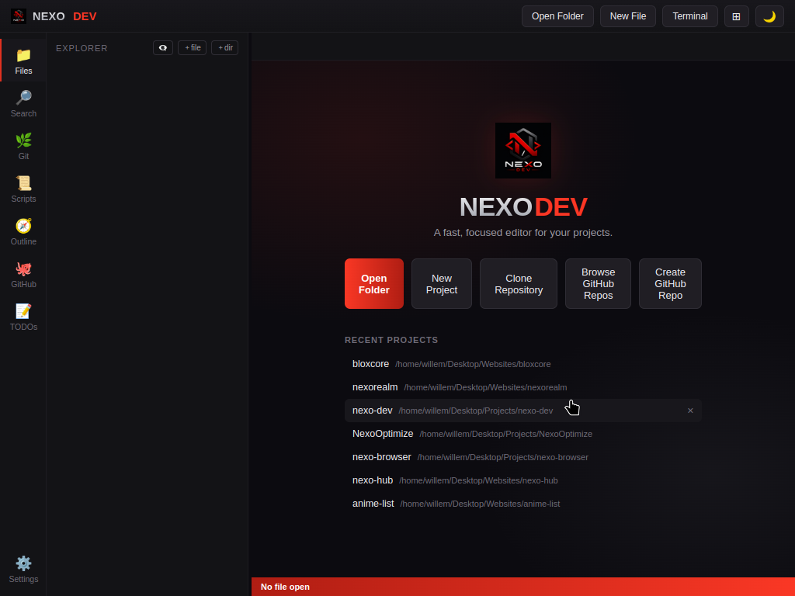
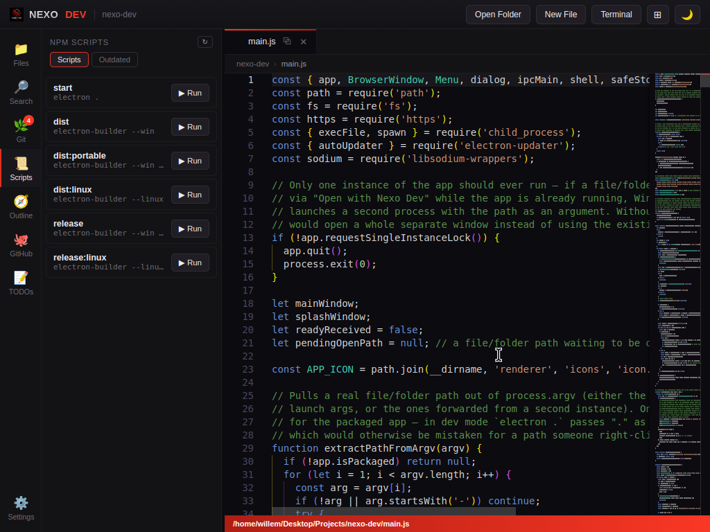
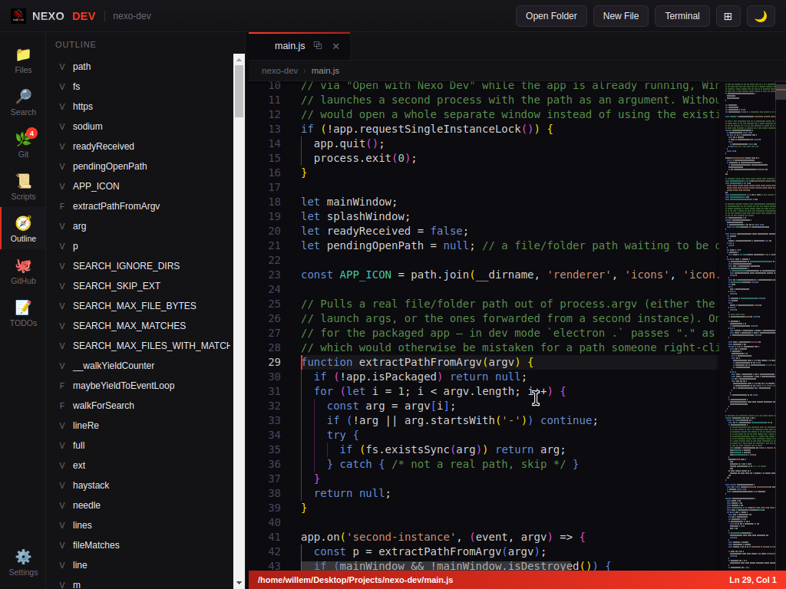
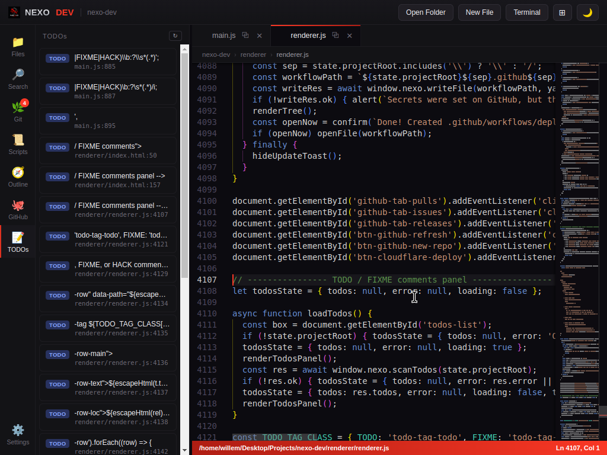
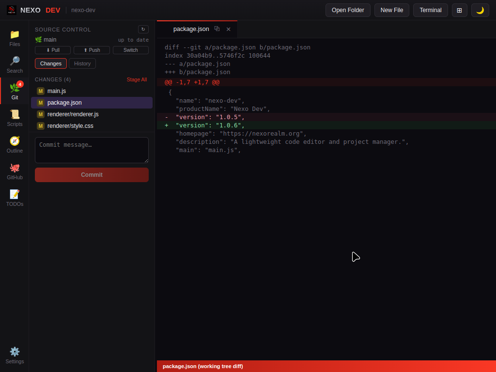
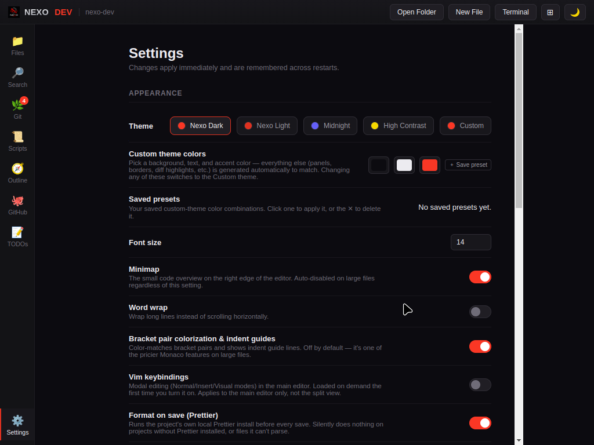

Merge conflicts
Conflicted files get their own section with an orange badge. Accept Current, Accept Incoming or Accept Both per conflict block, with inline highlighting so you never have to hunt for <<<<<<< markers.
Nexo Dev is a lightweight, standalone code editor and project manager built on Electron and Monaco — the same editor engine behind VS Code. Files, Git, npm scripts and GitHub, all in one window.

Editor
An icon rail on the left switches between workspaces. Files, Search, Git, Scripts, Outline, GitHub and TODOs all share the same tabs, so you're never juggling windows.
Open any local folder as a project, start a new one, or clone straight from a URL. The file tree loads lazily and skips node_modules and .git automatically, so it stays quick even on large projects.
Ctrl+\) — open any tab in a second pane side by side; edits sync instantly between panes.
Jump around large files with a live symbol outline, and run your project's npm scripts — or update outdated packages — without leaving the editor for a terminal.
package.json and gives every script a one-click Run button.
A bottom panel runs one-off commands in your project root with real ANSI colors, so npm install, git pull or your test runner render exactly like they would in a real shell.
Ctrl+`) — command history, stop button, resizable panel, optional custom shell override in Settings.TODO, FIXME and HACK comments and lists them with file and line number, click to jump straight there.
Source control
Git support shells out to your system's git — no bundled native dependency, so it behaves exactly like your normal CLI.

Conflicted files get their own section with an orange badge. Accept Current, Accept Incoming or Accept Both per conflict block, with inline highlighting so you never have to hunt for <<<<<<< markers.
Connect a GitHub token in Settings to browse a repo's pull requests, issues and releases, or create a new GitHub repo from inside the app.
Generate a GitHub Actions workflow that deploys the current project to Cloudflare Pages, straight from the GitHub panel.
Personalize
Five built-in themes, or design a Custom one from just three colors — background, text, and accent generate the whole palette automatically.

Ctrl+K Z) hides every panel but your tabs for distraction-free writing.Availability
Built with Electron, packaged natively for both desktops.
An NSIS installer registers "Open with Nexo Dev" in Explorer's right-click menu, or grab the portable build for a zero-install .exe.
Distributed as an AppImage that runs on most distributions with no install step, or a .deb package for Debian-based systems.
git on your PATHGet started
No accounts, no cloud sync required — projects, themes and settings are stored locally.